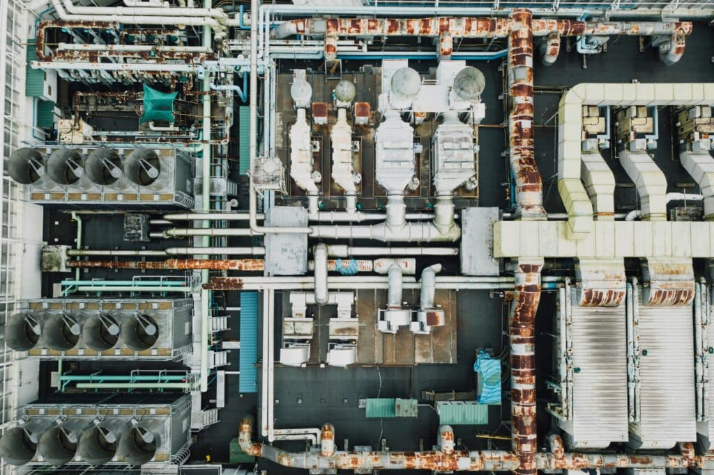

01Site Inspections
Site Inspection Drone Services – where precision meets perspective.
Empower your site inspections with aerial insights that redefine safety, efficiency, and decision-making. From remote areas to hard-to-reach locations, SKYi delivers clarity from above, ensuring comprehensive assessments and actionable insights.